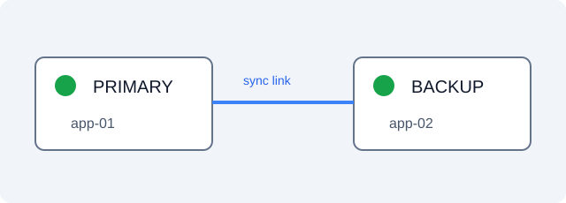

应用服务器配置变更方案
这是人工构造的联调材料，不是实际生产方案。
变更范围
本次变更涉及 2 台应用服务器，不涉及数据库变更。
维护窗口
维护窗口为 30 分钟。
拓扑图
下图展示主备应用服务器及连接关系，绿色圆点代表状态正常。

回退计划
| 触发条件 | 处置 |
|---|---|
| 任一应用健康检查失败 | 恢复变更前配置，由值班人员复核服务。 |
表单状态
数据库变更：涉及 不涉及
这是人工构造的联调材料，不是实际生产方案。
本次变更涉及 2 台应用服务器，不涉及数据库变更。
维护窗口为 30 分钟。
下图展示主备应用服务器及连接关系，绿色圆点代表状态正常。

| 触发条件 | 处置 |
|---|---|
| 任一应用健康检查失败 | 恢复变更前配置，由值班人员复核服务。 |
数据库变更：涉及 不涉及